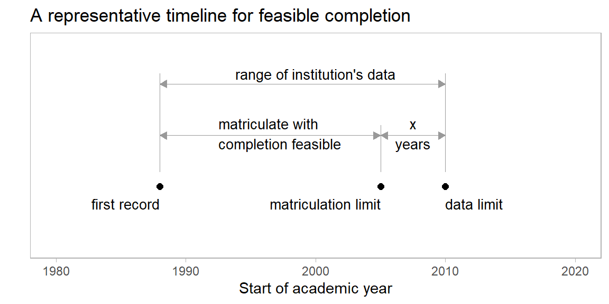

vignettes/feasible_completion.Rmd
feasible_completion.RmdPersistence metrics often include a criterion that students complete their programs within \(x\) years (typically 6 years, based on 150% of the “normal” time to completion). See, for example, (“IPEDS Survey Components” 2018).
In longitudinal research, this completion criterion requires special care. For student records near the upper limit of an institution’s data range, a student’s completion status can be ambiguous. Consider a case in which:
The student satisfies the completion criterion, but their recorded degree status is NA because their degree term exceeds the data range.
Without special care, such students would add to the count of non-graduates, adversely and unfairly affecting the value of a persistence metric. Therefore, if completing their program is not feasible given the range of data available, students with a degree status of NA are excluded from the analysis.
Feasible completion terminology is illustrated in the figure. Definitions are given below.

YYYYT, where YYYY is the year that starts the academic year and T is the term index: 1 (Fall), 2 (Winter, quarter systems), 3 (Spring), or 4-6 (summer sessions).
# packages used in the vignette library("midfieldr")
A vector of student IDs is required to begin the feasible completion analysis. We choose the set of students ever enrolled in the study programs as the largest possible pool.
From earlier work in the case study, we have a built-in data set exa_ever of the 10,135 student IDs ever enrolled in our case study programs.
# identify the group of students enrollees_id <- exa_ever # examine the result str(enrollees_id) #> chr [1:10135] "MID25783178" "MID25783197" "MID25783388" "MID25783441" ...
This vector of IDs is the input to completion_feasible(), which performs the subsetting for completion feasibility in one call.
# subset IDs for feasible completion enrollees_fc <- completion_feasible(id = enrollees_id) # examine the result str(enrollees_fc) #> chr [1:8043] "MID25783178" "MID25783197" "MID25783388" "MID25783441" ...
In this instance, we started with 10,135 enrollees. After applying the criteria for feasible completion, we retain 8043 students. These students either graduated (demonstrating the feasibility of completing their programs before the data limit) or they matriculated no later than their matriculation limits.
For continuing work with this case study, these IDs are saved as a data set in midfieldr called exa_ever_fc.
The remainder of the vignette describes the inner workings of completion_feasible().
We obtain the degree data for the enrollees using get_status_degrees() to subset the student degree data (midfielddegrees or equivalent) and return the student degree keyed by ID. The values of degree are character, e.g., “Bachelor of Science”, or NA for no degree.
# gather student data for feasible completion degree_data <- get_status_degrees(keep_id = enrollees_id) # examine the result str(degree_data) #> 'data.frame': 10135 obs. of 3 variables: #> $ id : chr "MID25783178" "MID25783197" "MID25783388" "MID25783441" ... #> $ institution: chr "Institution M" "Institution M" "Institution M" "Institution M" ... #> $ degree : chr "Bachelor of Science" "Bachelor of Science" NA "Bachelor of Science" ...
Students with degrees have demonstrated that completing their programs before the data limits was feasible. We can extract their IDs (to be used later) and continue the completion feasibility study with the smaller non-graduate student subset.
# subset the grads grad_rows <- !is.na(degree_data$degree) grads <- degree_data[grad_rows, ] grads_id <- grads$id # subset the nongrads nongrads <- degree_data[!grad_rows, ] nongrads_id <- nongrads$id # examine the result str(grads_id) #> chr [1:6112] "MID25783178" "MID25783197" "MID25783441" "MID25783491" ... str(nongrads_id) #> chr [1:4023] "MID25783388" "MID25783553" "MID25783606" "MID25783648" ...
We call get_status_transfers() for the non-graduates to subset the student attributes data (midfieldstudents or equivalent) and return the student matriculation term and transfer credit hours keyed by ID. The values of hours_transfer are numerical or NA for no transfer hours.
# gather student data for feasible completion transfer_data <- get_status_transfers(keep_id = nongrads_id) # examine the result str(transfer_data) #> 'data.frame': 4023 obs. of 3 variables: #> $ id : chr "MID25783388" "MID25783553" "MID25783606" "MID25783648" ... #> $ term_enter : num 19871 20021 20011 20071 20011 ... #> $ hours_transfer: num NA NA NA NA NA NA NA NA NA NA ...
Joining transfer_data to nongrads (by id) yields the complete student information we need.
# join the student data for feasible completion nongrads <- merge(nongrads, transfer_data, all.x = TRUE) # examine the result str(nongrads) #> 'data.frame': 4023 obs. of 5 variables: #> $ id : chr "MID25783388" "MID25783553" "MID25783606" "MID25783648" ... #> $ institution : chr "Institution M" "Institution M" "Institution M" "Institution M" ... #> $ degree : chr NA NA NA NA ... #> $ term_enter : num 19871 20021 20011 20071 20011 ... #> $ hours_transfer: num NA NA NA NA NA NA NA NA NA NA ...
get_institution_limits() provides the following information we need for feasible completion analysis:
midfieldterms)matriculation limit = data limit - span (default span is 6 years)Some data limits are “rounded down” before computing matriculation limits. Summer term data limits are rounded to the preceding Spring; Winter term data limits (institutions on quarter systems) are rounded to the preceding Fall.
# gather institution data for feasible completion institution_limits <- get_institution_limits() # examine the result institution_limits #> institution matric_limit data_limit #> 1 Institution A 19981 20034 #> 2 Institution B 20051 20104 #> 3 Institution C 20101 20154 #> 4 Institution D 20101 20154 #> 5 Institution E 19981 20034 #> 6 Institution F 19991 20044 #> 7 Institution G 19993 20051 #> 8 Institution H 19981 20036 #> 9 Institution J 20041 20096 #> 10 Institution K 19981 20034 #> 11 Institution L 20111 20164 #> 12 Institution M 20041 20096
We determine the median number of credit-hours per term by institution. We use only students with degrees.
# for graduating students, find median hours per term hr_per_term <- get_institution_hours_term(keep_id = grads_id) hr_per_term #> institution median_hr_per_term #> 1 Institution A 14 #> 2 Institution B 15 #> 3 Institution C 14 #> 4 Institution D 17 #> 5 Institution E 12 #> 6 Institution F 14 #> 7 Institution G 12 #> 8 Institution H 12 #> 9 Institution J 12 #> 10 Institution K 12 #> 11 Institution L 12 #> 12 Institution M 14
And we join hr_per_term to institution_limits (by institution) to conclude our institution data gathering.
institutions <- merge(institution_limits, hr_per_term, all.x = TRUE) institutions #> institution matric_limit data_limit median_hr_per_term #> 1 Institution A 19981 20034 14 #> 2 Institution B 20051 20104 15 #> 3 Institution C 20101 20154 14 #> 4 Institution D 20101 20154 17 #> 5 Institution E 19981 20034 12 #> 6 Institution F 19991 20044 14 #> 7 Institution G 19993 20051 12 #> 8 Institution H 19981 20036 12 #> 9 Institution J 20041 20096 12 #> 10 Institution K 19981 20034 12 #> 11 Institution L 20111 20164 12 #> 12 Institution M 20041 20096 14
Joining nongrads and institution_limits (by institution) yields the essential elements we need to advance an institution’s matriculation limit by the term-equivalent of any transfer credit hours.
# join student and institution data for feasible completion fc_data <- merge(nongrads, institutions, all.x = TRUE) # examine the result str(fc_data) #> 'data.frame': 4023 obs. of 8 variables: #> $ institution : chr "Institution A" "Institution A" "Institution A" "Institution A" ... #> $ id : chr "MID26131502" "MID26131523" "MID26131544" "MID26304245" ... #> $ degree : chr NA NA NA NA ... #> $ term_enter : num 20011 20011 19981 19891 20021 ... #> $ hours_transfer : num NA NA NA NA NA NA NA NA NA NA ... #> $ matric_limit : num 19981 19981 19981 19981 19981 ... #> $ data_limit : num 20034 20034 20034 20034 20034 ... #> $ median_hr_per_term: num 14 14 14 14 14 14 14 14 14 14 ...
Before converting transfer credit hours to their term equivalent, we set all NA values of hours_transfer to zero.
rows_to_zero <- is.na(fc_data$hours_transfer) fc_data$hours_transfer[rows_to_zero] <- 0 # examine the result str(fc_data) #> 'data.frame': 4023 obs. of 8 variables: #> $ institution : chr "Institution A" "Institution A" "Institution A" "Institution A" ... #> $ id : chr "MID26131502" "MID26131523" "MID26131544" "MID26304245" ... #> $ degree : chr NA NA NA NA ... #> $ term_enter : num 20011 20011 19981 19891 20021 ... #> $ hours_transfer : num 0 0 0 0 0 0 0 0 0 0 ... #> $ matric_limit : num 19981 19981 19981 19981 19981 ... #> $ data_limit : num 20034 20034 20034 20034 20034 ... #> $ median_hr_per_term: num 14 14 14 14 14 14 14 14 14 14 ...
Now we convert transfer credit hours to their term equivalent.
# estimate the term-equivalent of transfer credit hours numerator <- fc_data$hours_transfer denominator <- fc_data$median_hr_per_term fc_data$terms_transfer <- floor(numerator / denominator) # examine the result str(fc_data) #> 'data.frame': 4023 obs. of 9 variables: #> $ institution : chr "Institution A" "Institution A" "Institution A" "Institution A" ... #> $ id : chr "MID26131502" "MID26131523" "MID26131544" "MID26304245" ... #> $ degree : chr NA NA NA NA ... #> $ term_enter : num 20011 20011 19981 19891 20021 ... #> $ hours_transfer : num 0 0 0 0 0 0 0 0 0 0 ... #> $ matric_limit : num 19981 19981 19981 19981 19981 ... #> $ data_limit : num 20034 20034 20034 20034 20034 ... #> $ median_hr_per_term: num 14 14 14 14 14 14 14 14 14 14 ... #> $ terms_transfer : num 0 0 0 0 0 0 0 0 0 0 ...
There are several columns we are finished with that we can drop for clarity.
# omit columns we are finished using fc_data$degree <- NULL fc_data$data_limit <- NULL fc_data$institution <- NULL fc_data$hours_transfer <- NULL fc_data$median_hr_per_term <- NULL # examine the result head(fc_data) #> id term_enter matric_limit terms_transfer #> 1 MID26131502 20011 19981 0 #> 2 MID26131523 20011 19981 0 #> 3 MID26131544 19981 19981 0 #> 4 MID26304245 19891 19981 0 #> 5 MID26234567 20021 19981 0 #> 6 MID26305117 19921 19981 0
Students are typically required to complete at least the final 30-60 credits (about 2 years) in residence at their new institution to earn a degree. Thus for the feasible completion analysis, we limit the transfer terms to 4 or less.
rows_to_limit <- fc_data$terms_transfer > 4 fc_data$terms_transfer[rows_to_limit] <- 4
Next we perform some “term arithmetic” to advance the matriculation limit by the number of terms of credit hours transferred. term_addition() adds the number of terms T in the add_col argument to the terms YYYYT in the term_col argument.
fc_data <- term_addition(fc_data, term_col = "matric_limit", add_col = "terms_transfer" ) str(fc_data) #> 'data.frame': 4023 obs. of 4 variables: #> $ matric_limit : num 19981 19981 19981 19981 19981 ... #> $ id : chr "MID26131502" "MID26131523" "MID26131544" "MID26304245" ... #> $ term_enter : num 20011 20011 19981 19891 20021 ... #> $ terms_transfer: num 0 0 0 0 0 0 0 0 0 0 ...
Finally, we subset the non-graduates, retaining those whose matriculation term is no later than the matriculation limit.
rows_we_want <- fc_data$term_enter <= fc_data$matric_limit nongrad_fc <- fc_data[rows_we_want, ] str(nongrad_fc) #> 'data.frame': 1931 obs. of 4 variables: #> $ matric_limit : num 19981 19981 19981 19981 19981 ... #> $ id : chr "MID26131544" "MID26304245" "MID26305117" "MID26305220" ... #> $ term_enter : num 19981 19891 19921 19911 19931 ... #> $ terms_transfer: num 0 0 0 0 0 0 0 0 0 0 ...
We combine the IDs of these non-grads withe the IDs of the grads saved earlier. The result is the vector of IDs of students from the original pool for whom program completion is feasible.
nongrad_fc_id <- nongrad_fc$id feasible_id <- sort(unique(c(grads_id, nongrad_fc_id))) str(feasible_id) #> chr [1:8043] "MID25783178" "MID25783197" "MID25783388" "MID25783441" ...
This result is identical to the result obtained earlier using completion_feasible().
“IPEDS Survey Components.” 2018. National Center for Education Statistics (NCES); https://nces.ed.gov/ipeds/use-the-data/survey-components/outcome-measures.